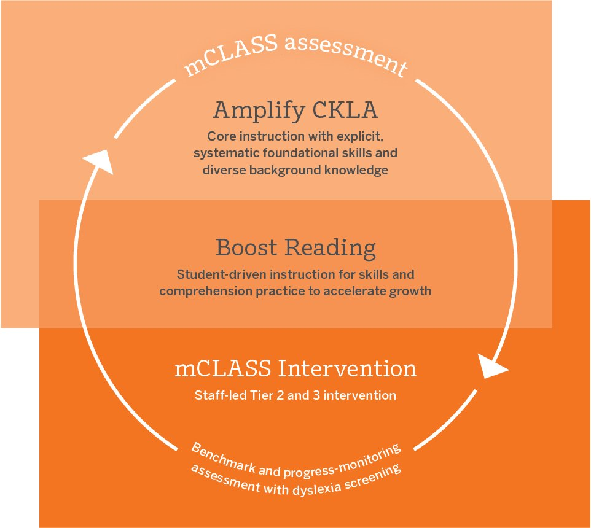
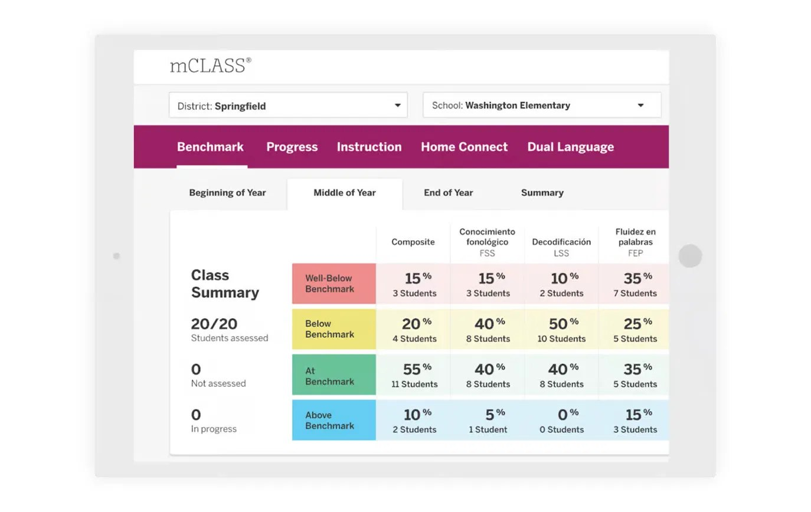
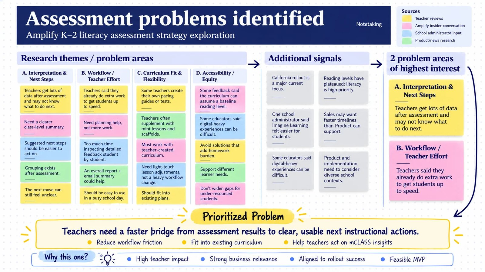
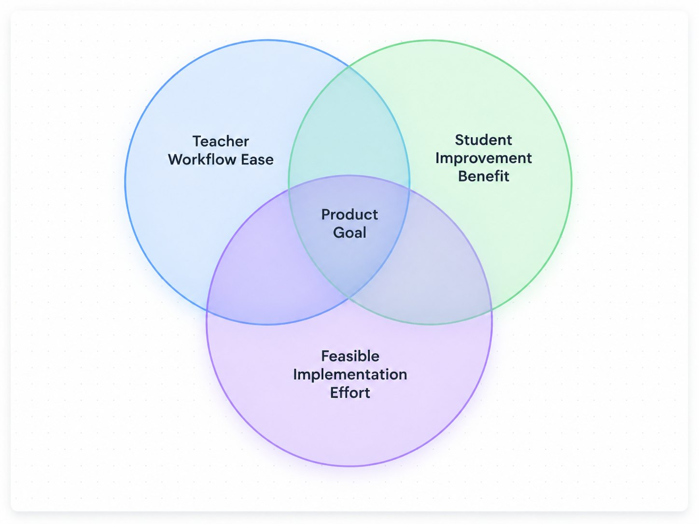
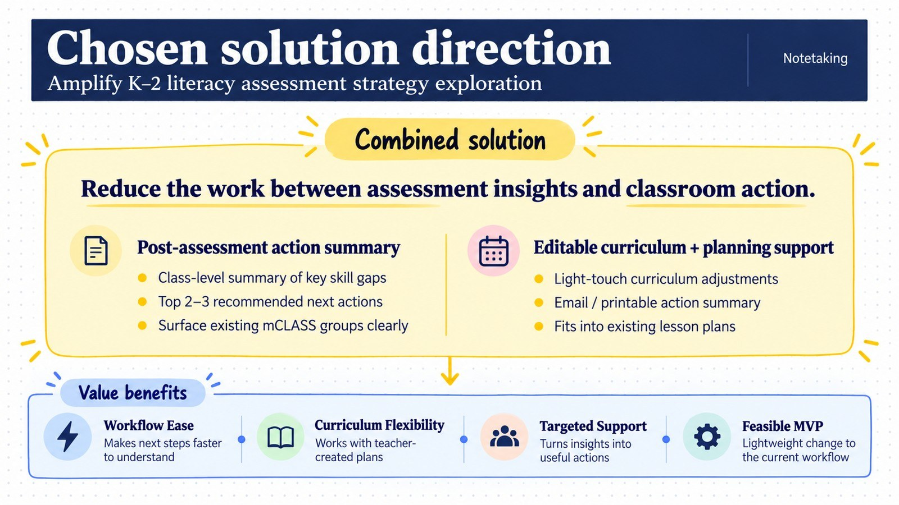
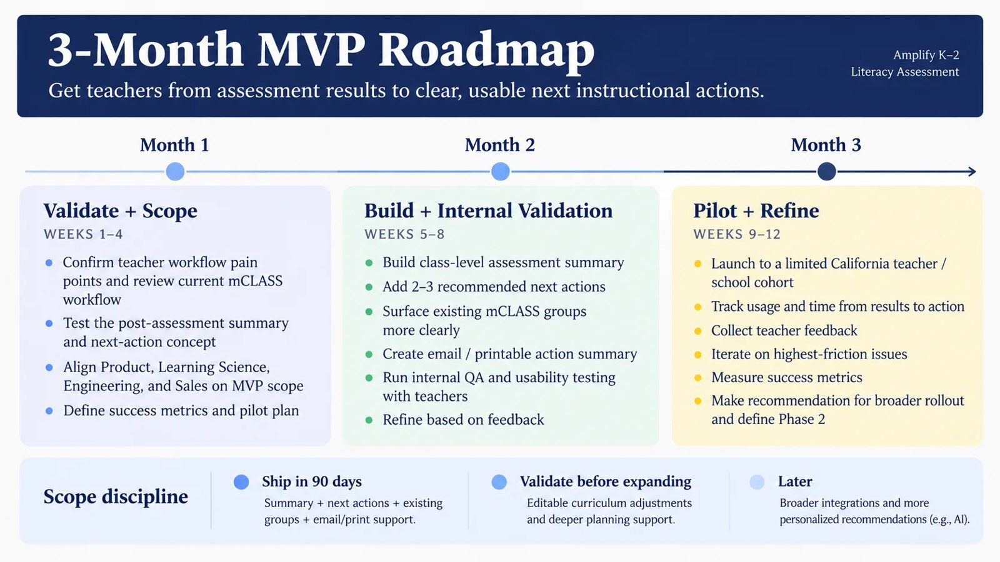

I put this together to practice thinking about mCLASS the way I would on the Assessment team. Note: I used public information, teacher feedback, online reviews through reddit, and online demos to gain an understanding and analysis.
Video of me walking through this product strategy with live voiceover. Opens in Loom.
My Understanding of Amplify's mCLASS
Amplify is a K–12 education company that makes curriculum and assessment programs for schools. mCLASS is its early literacy assessment. Teachers give K–2 students short one-minute reading checks, and mCLASS turns the results into a picture of each student’s skills, flags students at risk for dyslexia, and groups students by where they need support.

The moment right after assessment, when a teacher turns results into a plan, is where this case study focuses.
01Why I started here
California’s K–2 literacy rollout is a big moment for mCLASS, and literacy is clearly an Amplify priority. Districts renew when teachers use the tool and leaders can see it helping kids, so my question was what could make this rollout land well with teachers.
One constraint I kept in mind was that sales may reasonably want to move faster than Product, so anything I thought deeply about what could be shipped in a quarter or less.
02Current product and its users

The core flow is assessment, showcasing results, grouping based on weak areas, then implementing instructional support. The primary user is the K–2 teacher.
mCLASS already has a Class Summary showing how many students fall into each benchmark band for each skill. It shows a visual of where the class is as a whole.
03Research signals
I pulled from Amplify product and news coverage, watched demos, read ~30 teacher reviews on Reddit, had a conversation with someone at Amplify on the customer success team, and a school administrator that ran currriculum for an Illinois school district but was a customer of Imagine Learning. I put each signal on a sticky note and sorted until patterns showed up.

- Interpretation: mCLASS already suggests next steps for each student, but some teachers said those steps could be easier to act on. Others wanted a clearer class-level view of what to do after assessment.
- Workflow: This was the strongest theme--how mCLASS is embedded in the workflow of teachers' daily schedules. Teachers already do extra work to get students up to speed. They do not like extra steps in their day.
- Curriculum fit: Many teachers build their own curriculum guides and mini-lessons as additions to the Amplify cirriculum.
- Accessibility: Some materials assume a baseline reading level, and digital-heavy experiences are hard for some students.
One school administrator said Imagine Learning felt easier for students. Of course, with more time, I would interview 50+ teachers both customers and non-customers about their experience with this tool or similar one to get a stronger signal of data points. However for the purpose of this study, I will imagine my few findings as a signal.
04Narrowing the problem - A Framework
Interpretation and workflow kept showing up together: a teacher unsure what the data means also spends extra time figuring it out. Curriculum fit and accessibility mattered just as much, but I treated them as requirements any solution had to meet rather than specifically realted to assessments.
I compared options on three a framework of three criteria: teacher workflow ease, student improvement benefit, and feasible implementation effort.

That led me to one problem: Teachers need a faster bridge from assessment results to clear, usable next instructional actions for their whole class.
05What I got wrong at first
My first instinct was student grouping. Then I learned mCLASS already groups students by areas of weakness, suggests next steps for each student, and shows a class-level summary of where students stand. Because the solution already exists My hypothesis became that turning it into a classroom plan is still mostly the teacher’s job. With prior experience working in assessments where the issue was going from result to action, I stopped asking “how do we create groups?” and started asking “how do we help teachers act on what mCLASS already identified, in a more concise way across the whole class if needed?”
Note: Some things I am not able to answer from the outside such as the issue discoverability, comprehension scores, trust, or time. Each points to a different fix, which is why my roadmap starts with validation.
06Solutions I considered
I brainstormed several options: a class-level action plan, top recommended next actions, more visible groups, small-group activities, editable curriculum adjustments, an email or printable summary, and progress-monitoring reminders. The question was which worked together and could ship first.
07The direction I chose

Where the moves come from is the core product question. My hypothesis: the plan rolls up mCLASS’s existing per-student next steps and groups to find the gaps shared by the most students, and Learning Science defines which classroom moves map to each shared gap. Nothing new is generated by AI in the MVP.
The second is planning support: an email or printable version teachers can bring into planning time, and later, light-touch adjustments to their own lesson plans. That addresses workflow and curriculum fit. It also covers accessibility: the printable plan works in lower-tech classrooms, and recommended moves shouldn’t assume home devices or add homework.
I chose this because it mostly reorganizes what mCLASS already knows rather than inventing new content, which makes it faster to build and easier to trust.
08Mocking it up
Before writing a roadmap, I turned the direction into a mockup. Using Claude and patterns from mCLASS’s existing design, I could sketch what a teacher would actually see in an afternoon instead of waiting on a full design cycle. The benefit is speed: a picture gets immediate feedback from teachers and teammates, and it suggests the idea far more clearly than a paragraph can.

The mockup puts three layers in one place: the class’s biggest needs, the small groups mCLASS already creates, and a link to each student’s individual plan in Instruction. Teachers can use whichever fits their day. 'Add to plan' button is the bridge into their own planning system, and it gives us a signal we can measure: which moves teachers actually choose.
One question I would want more information to discover: how does mCLASS connect assessment to the planning and curriculum tools teachers already use? This would help discover how 'Add to plan' would work and integrate with the assessment results.
09A realistic 3-month MVP roadmap

Month 1 is about validating and scoping. I’d confirm where teachers lose time and test the concept with them. I’d start with Implementation and Customer Success, who hear teacher pain points every day, and Learning Science, to understand how current next steps are built. Then I’d align Engineering, Design, and Sales on scope and define metrics with Data.
Month 2 is building and testing. Engineering and Design build the action plan, next actions, group surfacing, and email/print. Learning Science reviews the recommendation logic, and a small group of teachers tests usability.
Month 3 is piloting and refining. We launch to a limited California cohort, with Implementation supporting pilot schools directly. Data tracks usage, Customer Success gathers feedback, and I bring a rollout recommendation back to Sales and leadership.
Scope discipline matters most to me: ship the action plan, next actions, groups, and email/print in 90 days, validate curriculum adjustments before expanding, and leave integrations and personalization for later. Sales gets something real within the rollout window, and teachers don’t get unchecked recommendations.
10Outcomes I would measure
The main metric is an expected decrease in time from assessment to instructional action. Since that’s hard to observe directly, I’d track a proxy and a few supporting signals:
- Proxy: time from benchmark completion to a teacher opening the plan and marking a move as used
- Use of the recommended next steps
- Engagement with the plan, including email opens and prints
- Teacher confidence, through short feedback surveys
Longer term:
- Student results compared with before this addition
- Implementation satisfaction
- Product renewal
11What I’d still need to validate
- Internal data that points to if teachers are actually stuck at this step, or is it louder online than in practice?
- How do teachers split planning between whole-class time and individual support, and does a class-level view help both?
- Do recommendations fit district-specific curriculum in California?
Note: I’d expect some assumptions to be wrong, and I’d want to find out early.
Thanks for reading!
If I were on the team, these are the conversations I’d start with.